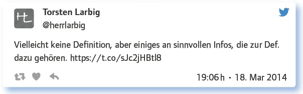
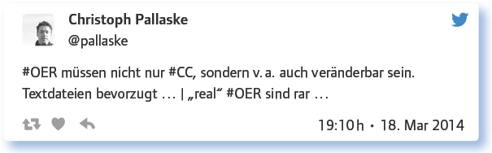
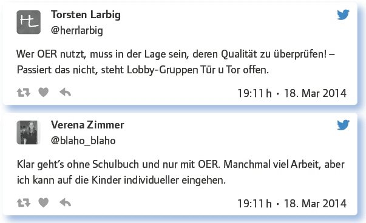
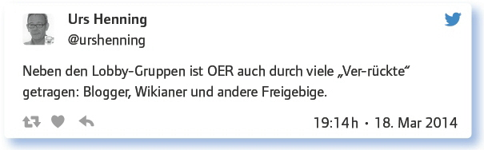
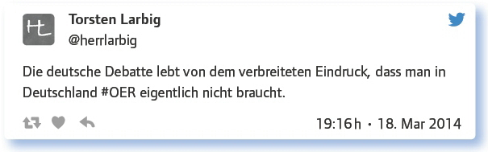
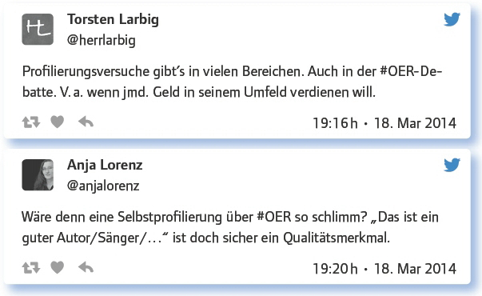
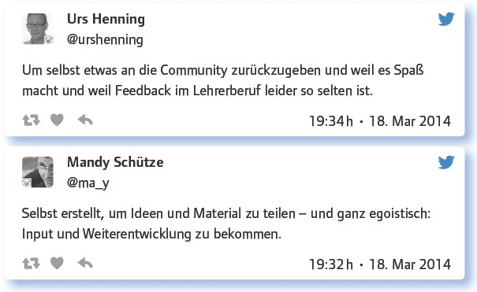
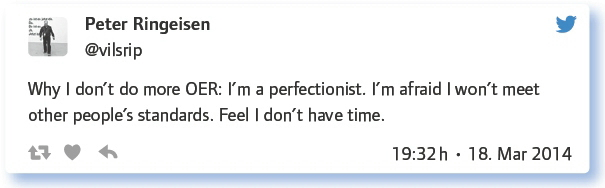

von Elke Höfler
OER (Open Educational Resources)? Das war doch schon einmal Thema beim #EDchatDE. Werden wir jetzt zum TV-Format mit regelmäßigen Wiederholungen? – Nun: Die Nachfrage nach diesem Thema ist hoch.
Im September 2013 war das Thema im Kontext der beiden OER-Konferenzen in Berlin und Köln aufgekommen. Dieses Mal steht es ohne diesen Kontext im Raum. Als Vorbereitung auf den #EDchatDE wurden nur wenige Informationen dafür als Einladung zum Nachdenken gepostet: Du bist Lehrender und setzt unterschiedliche Materialien ein. Welche Rolle spielen dabei Open Educational Resources?
Für den Einstieg erst mal eine Definition: Was sind OER? Nur CC-Lizenzen oder reicht schon die Verlinkbarkeit von Material?
Den Anfang der Diskussion bildete eine Klärung der Begrifflichkeit, um für alle einen gemeinsamen Nenner zu schaffen:

Erste Unsicherheiten oder auch unterschiedliche Ansätze zeigten sich rasch, vor allem in Hinblick auf die Lizenzen sowie das thematisch nahe Urheberrecht:
Genau genommen cc, cc-by, cc-by-sa. In OER-Kursen in USA sah man das nicht so eng. Ich denke: Sharing is caring!
Echtes OER trägt immer CC-BY-SA Lizenz.
OER wäre mir am liebsten als Public Domain. Andere CC-Lizenzen sind schwierig für eine freie Verwendung zu handhaben.
Nach den letzten Abmahnungen mit Wikipedia-Commons-Bildern (nein, nicht ich) akzeptiere ich nur noch CC0 als OER.
Es gibt viele freie Lizenzen – aber jedes digitale Fitzelchen ist zu prüfen – was rechtssicheres Arbeiten verunmöglicht.
Einen wichtigen Hinweis fernab von Urheberrecht macht @pallaske:

OER in der Schule? – Das Schulbuch regiert. OER kommen entweder von Lobbygruppen oder sind nicht vorhanden.
Die Verwendung von OER statt eines oder als Ergänzung eines Schulbuchs in der Schule scheint zum Zeitpunkt der Diskussion noch nicht vorhanden gewesen zu sein:
Nope. Hier ein Fundus: http://t.co/Qo3n26RAUq Aber: Das Schulbuch ist natürlich schön „sicher“. #sicheristlangweilig
Beobachtungen vor dem Kopierer jeden Morgen: in der Schulrealität kümmert sich kaum jemand ums Urheberrecht/Lizenzen.
Qualitätskontrolle und der zeitliche Aspekt wurden als Hinderungsgründe oder Herausforderungen an OER-Materialien im Unterricht genannt, gleichzeitig aber immer wieder ihr Potenzial für einen individuell auf die Klasse abgestimmten Unterricht herausgestrichen:

Getragen werde die Initiative von Einzelkämpferinnen und -kämpfern:

Einen stark kritischen Tweet stellt @herrlarbig zur Diskussion:

Wer profitiert eigentlich wie von OER? Ist die deutsche OER-Debatte vor allem eine Selbstprofilierungsdebatte einiger weniger?
Die Frage nach dem Zugewinn wurde konsensuell beantwortet: Lehrende wie auch Lernende profitieren, jedoch auf unterschiedlichen Ebenen:
Lehrer, die digital arbeiten wollen und somit auf online verteilbare Materialien angewiesen sind.
Von OER profitiert jeder, der mitmacht, da eigenes Material veröffentlicht und verbessert werden kann.
OER ist sehr praktisch, wenn man Material erstellt und nicht extra nachfragen muss, ob man es verwenden darf.
Lehrende und Lernende profitieren gleichermaßen von OER. Die Unterrichtsqualität nimmt bei Zusammenarbeit zu.
Die Frage der (Selbst-)Profilierung erscheint spannend, wenn man die folgenden Diskussionsbeiträge berücksichtigt:

Suche ein Bild (oder Musik/Video) zum heutigen Thema des #EDchatDE!
Die hier entstandene Sammlung sollte dem vollständigen Protokoll entnommen werden. Exemplarisch werden hier fünf Angaben sozusagen zum Appetitmachen belassen:
Das OER-Erklärvideo http://t.co/FVQTcjVCOm
OER-Lizenzen Ringvorlesung mit Matthias Spielkamp (http://t.co/25daxkzghw) @ iRightsinfo http://t.co/GSio6RqWn2
Not only one Video – but a whole channel about the question: Why Open Education Matters http://t.co/gbVLe4Jzt5
zum.de – wer wir sind und was wir machen :-) #OER: http://t.co/9mEyb2VIdY
OER in der Schule: http://t.co/Nzd7baECbt
Warum hast du selbst schon OER erstellt? Warum hast du selbst noch keine OER erstellt?
Die Motivation, selbst OER zu erstellen, reicht von Spaß, über Faulheit bis hin zum Gedanken, der Community etwas zurückgeben, seine eigenen Materialien teilen zu wollen.
Weil es einfach Spaß macht – vor allem auch die Zusammenarbeit mit anderen und die Aktualität.
Es gibt genau das Material, das ich nutzen möchte, häufig noch nicht – oder ich bin zu faul zum Suchen. OER selber machen!
Um zu sehen, ob Vorteile der OER genutzt werden (Bearbeitbarkeit und Neu-Veröffentlichungen von diesen Inhalten). Wurde allerdings nicht wahrgenommen, zumindest wurde überarbeitetes Material nicht re-published. Schade.
Ich möchte etwas zurückgeben. Mag wohl die ideelle Idee hinter OER.
Gerade das Feedback wurde immer wieder als Motivation genannt. Die Qualitätskontrolle von OER erfolgt über die Community, die Feedback gibt, von dem man selbst profitieren und lernen kann. Neue Perspektiven eröffnen sich:

Die eigenen Qualitäts- oder Perfektionsansprüche führen jedoch mitunter auch dazu, eben keine OER zu produzieren:

Schüler erstellen Lernmaterial – für sich selbst, für Nachfolgegenerationen? Beispiele? Unterrichtsprojektideen? OER oder ©?
Einige Beispiele von Materialien, die gerade entstanden oder in der Entstehung waren, wurden genannt und können im Gesamtprotokoll nachgelesen werden. Die Idee, dass Schülerinnen und Schüler (SuS) selbst #OER erstellen, wurde dabei kritisch diskutiert:
Welche Anregungen, Fragen hast du sonst noch zum Thema?
Die Teilgeber/innen fanden hier noch Platz, um eigene Gedanken, Wünsche und Kritikpunkte zu sammeln. Einige werden hier als Gedankenanstöße unkommentiert wiedergegeben:
Ich finde zu OER wird viel zu viel theoretisch diskutiert und viel zu wenig wirklich erstellt.
Bei OER-Erstellung von SuS ist der Weg das Ziel.
In welchen Bundesländern gelten von Lehrern geschaffene Materialien als Eigentum der Schule?
Wie könnte ein idealer Prozess zur Einführung einer breiten Nutzung von OER in einer Schule aussehen?
Sind MOOCs eigentlich auch OER? Wem gehören die Inhalte, dem Professor oder der Uni? http://t.co/j0X6c8irUD
Wo stehen OER in 10 Jahren?
Open Educational Resources sind zweifelsohne ein wichtiges Thema, das in mehreren Ausgaben des #EDchatDE bereits angeschnitten wurde. Zwei Ausgaben, nämlich die dritte und die hier dargestellte 25., widmeten sich dem Thema vollständig. Neben vielen Linktipps, die im vollständigen Protokoll nachgelesen werden können, ging es vor allem um Erfahrungen und Fragestellungen, die sich in der Unterrichtspraxis ergeben können. Themen wie das TeilenWollen oder auch die notwendige Qualitätskontrolle wurden ebenso angesprochen, wie Praxisbeispiele oder verwandte Themen, wie MOOCs. Der Konsens scheint dabei in der Notwendigkeit von OER zu liegen, die zum Zeitpunkt der Diskussion jedoch von einiger Unsicherheit begleitet wurde.
Weiterführende Informationen:
Smore zur 25. Ausgabe des #EDchatDE: https://www.smore.com/7fh7z
Link zum Vorbereitungstext: https://edchatde.wordpress.com/2014/03/17/zur-vor-bereitung-des-25-edchatde-oer-in-der-schule-inkl-linkliste/
Verwandtes Thema: Digitale Schulbücher: Wozu eigentlich? Können die weg? https://edchatde.wordpress.com/2015/10/19/zur-vorbereitung-des-101-edchatde-am-20-10-15-digitale-schulbuecher-wozu-eigentlich-koennen-die-weg/
Die von den Moderatoren vorab geposteten Links:
Eine erste Übersicht zum Thema auf dem Deutschen Bildungsserver: Open Educational Resources (OER) für Schulen in Deutschland
Wikipedia zu OER: https://de.wikipedia.org/wiki/Open_Educational_Resources
A project of the Faculty of Education, University of Cambridge „OER4schools“
An example from Poland: Open Educational Resources in the „Cyfrowa szkota“ (Digital School) National Program in Poland.” Creative Commons Polska
Paper of the University of Augsburg (Germany) (PDF)
Commonwealth of Learning – OER for Open Schools: Expanding ICT Expertise and Quality Secondary Education
Link zum vollständigen Protokoll: